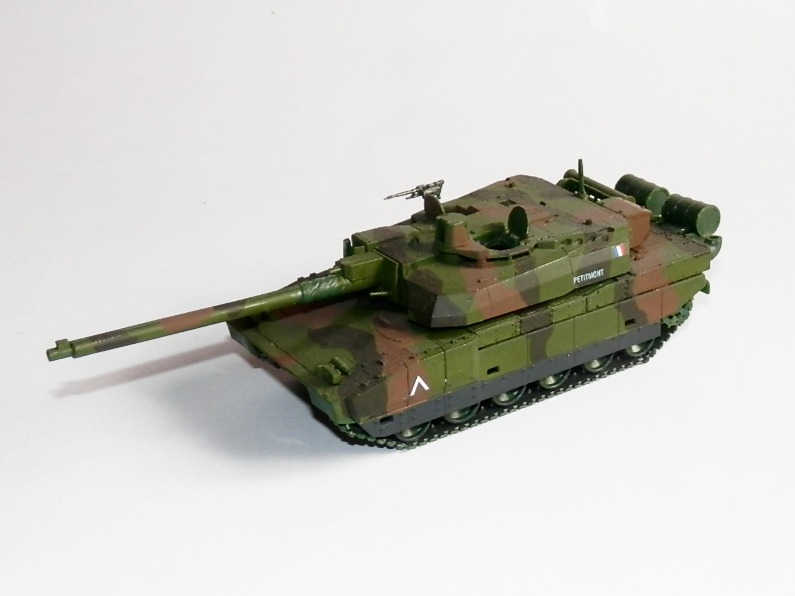
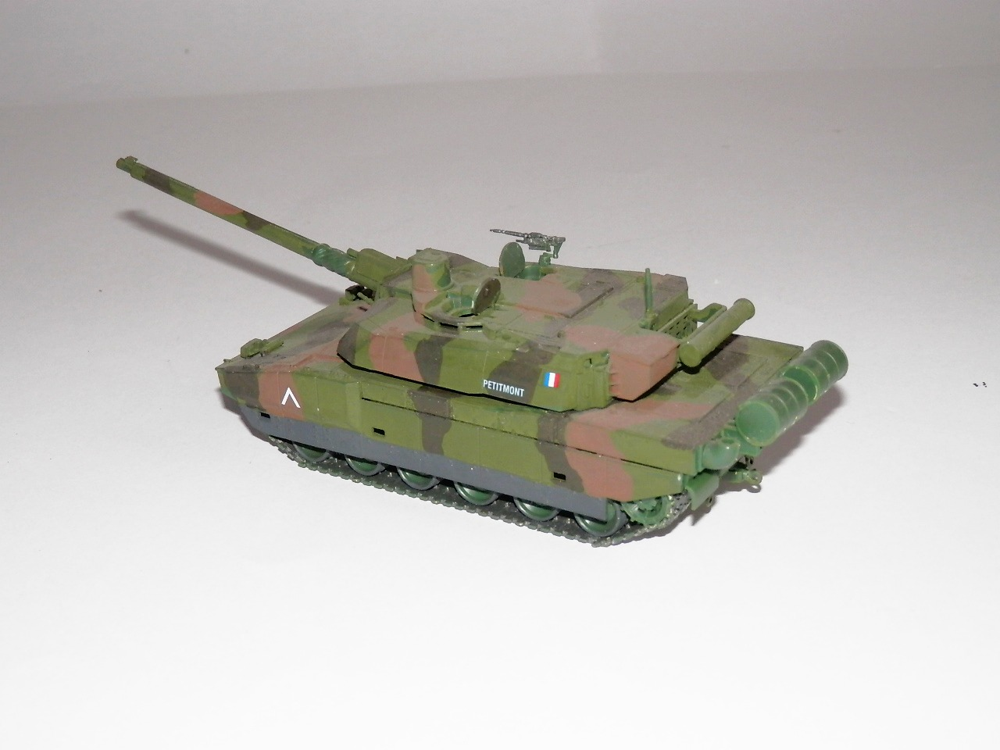

Mezzi militari · scale model archive
Leclerc french main battle tank
Leclerc french main battle tank — Kit: Revell. Scale 1/72 KFOR 6974 0006 Petitmont Juni 1999 Kosovo Peacekeeping - Kosovska Mitrovica XK, cute little kit

Photo gallery

English description
Scale 1/72
KFOR 6974 0006 Petitmont Juni 1999 Kosovo Peacekeeping - Kosovska Mitrovica XK, cute little kit
Descrizione italiana
KFOR 6974 0006 Petitmont, giugno 1999, Kosovo Peacekeeping - Kosovska Mitrovica, XK. Un piccolo kit molto grazioso.